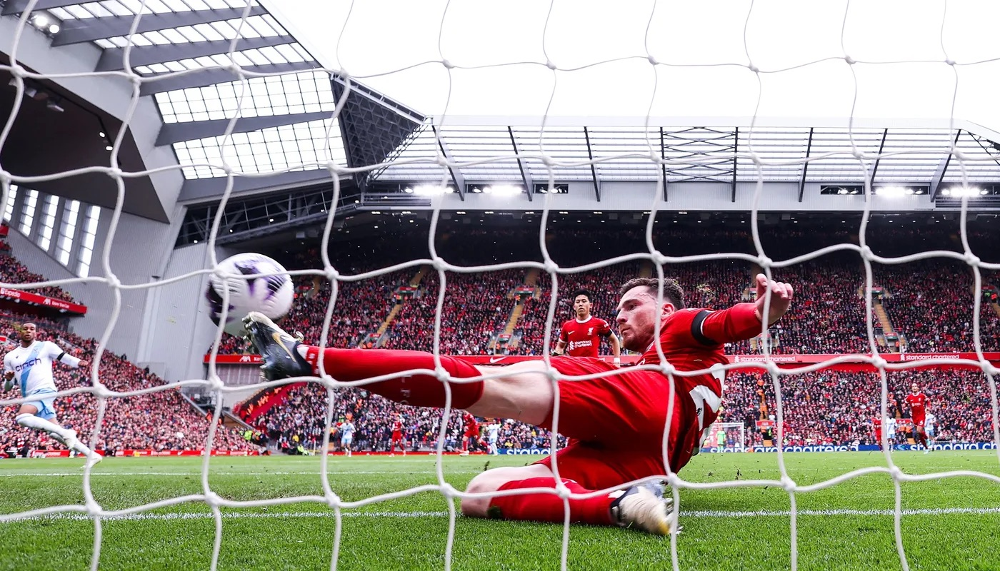

Discover the Magic of Premier League Soccer
Even if you've never followed soccer, the Premier League has a way of drawing you in with its unmatched excitement, drama, and passion. It's not just a game; it's a spectacle that blends athleticism, strategy, and raw emotion. Picture a stadium filled with tens of thousands of fans chanting, cheering, and living every moment with their team. The energy is contagious, and before you know it, you'll find yourself captivated by the beautiful game.

The Ultimate Unpredictability
What makes the Premier League so thrilling is its unpredictability. While other sports leagues often see the same teams dominate, the Premier League has a knack for delivering surprises. Underdogs can rise to the occasion, as seen in Leicester City’s miraculous title win in 2016, defying 5000-to-1 odds. Each matchday feels like a blockbuster, with last-minute goals and stunning upsets keeping you on the edge of your seat.

The World’s Best Talent on Display
Imagine watching the best soccer players in the world battle it out every week. From the dazzling footwork of wingers to the acrobatics of goalkeepers, Premier League players bring a level of skill and artistry that is mesmerizing. Managers, too, are tactical masterminds, crafting strategies that unfold like chess matches on the field. Even if you're new to soccer, the sheer brilliance on display is easy to appreciate.
Stories That Go Beyond the Game
The Premier League isn’t just about the 90 minutes on the pitch—it’s about the stories behind them. Whether it’s a player overcoming adversity to become a star, a club with a rich history spanning over a century, or rivalries fueled by decades of competition, there’s always a narrative to follow. These stories make the league feel personal, giving fans something to connect with on a deeper level.
A Global Celebration
Watching the Premier League is like joining a worldwide party. With fans across every continent, the league unites people from all walks of life. Supporters gather in pubs, cafes, and living rooms to celebrate their love for the game. You don’t need to understand all the rules to be part of it; the camaraderie and excitement are universal.

Experience the Premier League for Yourself
There’s no better time to dive into the Premier League than now. Whether you pick a team to root for, follow a thrilling match, or simply enjoy the spectacle of it all, you're guaranteed to find something that resonates with you. The Premier League is more than a sports league—it’s a cultural phenomenon that has the power to inspire, excite, and bring people together. Why not be a part of it?